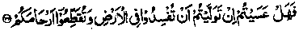

Chapter Seven
37. Khalifah al-Mahdi releases Musa bin Ja’far from prison on reading the Ayaat on kinship
Ameerul Mo’mineen Mahdi 'Rahmatullah alaihe had put Musaa bin JaTar in prison, for fear of treason. One night, the Khalifah was reciting the Holy Qur’an in Tahajjud Salaat when he came to the following Verse of Surah Muhammad:

Would you, then, if you were given the command, work corruption in the land and sever your ties of kinship? (Surah Muhammad: 22) '
He began to weep and cry while reciting the Verse again and again. At long last, when he had finished Salaat, he sent for Rabie and told him to call Musaa bin Ja‘far. Rabie went out and when he came back, accompanied by Musaa, the Khalifah was still weeping and reciting the Verse again and again. He said to Musaa bin Ja'far, I was reciting this Verse when it struck me that I was unkind to you, my relative. Now, if you promise that you will not rise in revolt against my descendents, I can set you free". Musaa said, "Far be it from me that I entertain a thought of revolting against your descendents! Nor am I in such a position!" At this, Khalifah Mehdi said to his chamberlain, "Give this man three thousand gold pieces and send him away right now, at this hour of the night, lest I should change my mind later.’ (It-haaf)